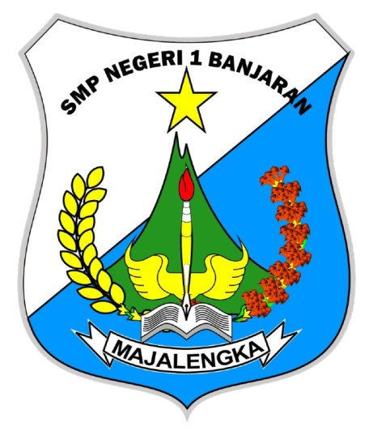

Profil Guru

| Nama | : Eka Amin Hidayat |
| Tempat Lahir | : Majalengka |
| Tanggal Lahir | : 01 Juni 1998 |
| Profesi | : Guru |
5+ Tahun Mengajar
500+ Siswa
Dunia Pendidikan
Pembina Pramuka
| Nama | : Eka Amin Hidayat |
| Tempat Lahir | : Majalengka |
| Tanggal Lahir | : 01 Juni 1998 |
| Profesi | : Guru |
ILMU HUKUM - UNIVERSITAS MAJALENGKA
UNIVERSITAS NAHDLATUL ULAMA CIREBON
KMD KURSUS MAHIR DASAR
2025
Perjalanan hidupku dalam dunia pendidikan tidak dimulai secara instan. Semua berawal dari proses belajar, pengalaman sederhana, serta keinginan untuk terus berkembang menjadi pribadi yang bermanfaat bagi orang lain. Dunia pendidikan mempertemukanku dengan berbagai tantangan, pengalaman, serta pelajaran hidup yang sangat berharga.
Sejak awal bekerja di lingkungan sekolah, aku menyadari bahwa pendidikan bukan hanya sekadar pekerjaan, tetapi merupakan sebuah pengabdian. Melihat para guru yang dengan sabar mendidik siswa memberikan inspirasi besar dalam perjalanan hidupku. Dari situlah muncul tekad untuk ikut berperan dalam membangun generasi masa depan melalui pendidikan.
Setiap langkah perjalanan memberikan pengalaman yang membentuk cara berpikir, kedewasaan, serta semangat untuk terus belajar. Perjalanan ini mengajarkanku bahwa keberhasilan tidak selalu datang dengan cepat, tetapi melalui proses panjang yang penuh kesabaran, kerja keras, dan keyakinan.
Kini aku menjalani peran sebagai guru dan pembina Pramuka yang terus berusaha memberikan kontribusi terbaik bagi siswa dan lingkungan pendidikan. Bagiku, menjadi pendidik berarti menjadi pembelajar sepanjang hayat yang tidak pernah berhenti mengembangkan diri.
Novel Guru dan Pramuka merupakan karya yang menceritakan perjalanan seorang guru muda dalam menemukan makna pengabdian melalui dunia pendidikan dan kegiatan kepramukaan.
Cerita ini menggambarkan bagaimana seorang guru tidak hanya mengajar di ruang kelas, tetapi juga membimbing siswa melalui kegiatan pramuka yang membentuk karakter, kepemimpinan, disiplin, serta semangat kebersamaan.
Melalui pengalaman sederhana, tantangan, serta perjalanan kehidupan di sekolah, novel ini menghadirkan kisah inspiratif tentang dedikasi, pengabdian, dan harapan bagi generasi muda Indonesia.
Puji syukur ke hadirat Tuhan Yang Maha Esa, karena atas rahmat dan karunia-Nya buku ini dapat diselesaikan dengan baik. Setiap halaman yang tertulis dalam buku ini merupakan bagian dari perjalanan, pengalaman, serta proses belajar yang terus berlangsung dalam dunia pendidikan.
Buku ini menceritakan perjalanan seorang guru muda yang memulai kariernya pada tahun 2021. Dalam perjalanan tersebut, penulis tidak hanya menjalankan tugas sebagai guru mata pelajaran, tetapi juga mengemban berbagai peran di lingkungan sekolah seperti Pembina Pramuka, tutor, editor, serta aktif dalam kegiatan kepramukaan sejak tahun 2023.
Kisah yang disajikan dalam buku ini bukan sekadar teori, melainkan pengalaman nyata yang dialami secara langsung. Berbagai cerita, tantangan, proses belajar, serta pengalaman berharga selama mengajar di tiga sekolah menjadi bagian penting dari perjalanan yang dituangkan dalam tulisan ini.
Harapannya, kisah dalam buku ini dapat memberikan inspirasi, motivasi, serta menjadi bacaan yang menarik bagi para pembaca.
Penulis : Eka Amin Hidayat
Baca Novel
Perjalananku dimulai setelah lulus kuliah ketika aku bekerja sebagai pegawai tata usaha honorer di SMP Negeri 1 Banjaran.
“Tidak ada perjalanan yang sia-sia selama kita terus belajar dan berjuang.”
Sebagai Guru Serdik profesional dan pengurus Kwartir Ranting (Kwaran) Pramuka, saya berperan dalam membina karakter, kepemimpinan, dan semangat kebangsaan melalui kegiatan pendidikan dan kepramukaan.
Ketika pertama kali kepala sekolah menugaskanku menjadi Pembina Pramuka, sejujurnya aku merasa ragu. Pengetahuanku tentang pramuka tidaklah terlalu banyak, hanya sebatas pengalaman yang pernah aku rasakan ketika masih duduk di bangku SMP. Bahkan pada awalnya aku sering merasa bahwa para siswa justru lebih memahami kegiatan pramuka dibandingkan diriku sendiri.
Meskipun demikian, tugas tetaplah amanah yang harus dijalankan. Peranku saat itu lebih banyak sebagai pendamping bagi para siswa dalam setiap kegiatan pramuka, menemani mereka ketika berlatih, serta memastikan setiap kegiatan berjalan dengan baik ketika mereka pergi maupun kembali ke sekolah.
Mungkin kepala sekolah menunjukku karena usiaku yang masih muda sehingga dianggap memiliki waktu dan tenaga lebih untuk mendampingi para siswa dalam berbagai kegiatan. Terlebih saat itu aku belum menikah, sehingga tidak banyak batasan waktu untuk hadir bersama mereka dalam perjalanan kegiatan kepramukaan.
Dari pengalaman sederhana itulah aku mulai belajar bahwa menjadi pembina bukan hanya tentang seberapa banyak pengetahuan yang dimiliki, tetapi tentang kesediaan untuk belajar bersama, tumbuh bersama, dan membersamai para siswa dalam membentuk karakter, semangat kebersamaan, serta jiwa kepemimpinan generasi muda.
.jpeg)
.jpeg)
.jpeg)
.jpeg)
Terbuka untuk kolaborasi pendidikan dan pengembangan pembelajaran.
Hubungi WhatsApp